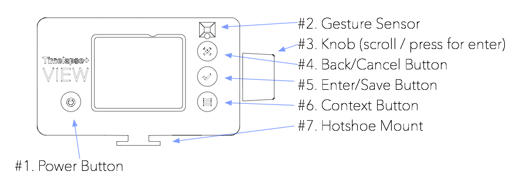
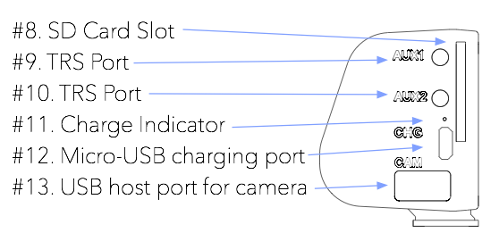

Timelapse+ VIEW
¡Bienvenido! Estos son los documentos oficiales del Intervalómetro VIEW de Timelapse+. Puedes revisar todo el documento o hacer clic en los enlaces de la izquierda para ir a alguna sección específica. Si encuentras errores o alguna parte confusa, contáctame a través de http://www.timelapseplus.com/contact o has la corrección tú mismo y envía una solicitud de cambio con github en el siguiente enlace: https://github.com/timelapseplus/VIEW-documentation
This document is also available in English: http://docs.view.tl
Este documento ha sido diseñado para su impresión, y puede imprimirse en formato PDF para una copia portátil.
Resumen y operaciones
Encendido y botones

Encendido
Para encender el VIEW, presiona y mantén presionado el botón de encendido (#1) durante 2 segundos. En unos pocos segundos, el botón se iluminará de rojo, indicando que se está encendiendo. El logo VIEW aparecerá en la pantalla poco después.
Apagado
Para apagar en VIEW, presiona y mantén presionado el botón de encendido (#1) durante 2 segundos. Aparecerá un aviso de confirmación en la pantalla. Gira la perilla y selecciona “Sí” y presiona la perilla o el botón de aceptar (#5) para apagar.
En caso de que el VIEW no responda, puede forzarse el apagado manteniendo apretado el botón de encendido (#1) durante 15 segundos. Después puede encenderse normalmente presionando el botón de Energía de nuevo durante 2 segundos.
Operación
La interfaz de usuarios del VIEW es un sistema basado en menú que ha sido diseñado para ser simple y para ser operado al aire libre y con guantes. Por esa razón, no cuenta con una pantalla táctil, en lugar de esto, se emplean botones sencillos y pernos para revisar las opciones. Utiliza la perilla para subir y bajar en las opciones de los menús. Para seleccionar o abrir la opción resaltada en el menú, presiona la perilla o el botón de aceptar (#5). Para retroceder o cancelar, presiona el botón de cancelar (#4). Algunas pantallas utilizan el botón de Contexto (#6) para mostrar opciones adicionales indicadas en la pantalla.
Sensor de gestos
El Sensor de Gestos (#2) funciona cuando la opción de lapso de tiempo está corriendo y la pantalla se pone en blanco. Ondea tu mano en la parte frontal para activar, después ondéala a la derecha para una vista previa del lapso de tiempo actual, o el anterior, o a la izquierda para cancelar. Mientras que esté mostrándose la vista previa, ondea la mano a la derecha para saltar 10 segundos.
Puertos y conexiones

Carga
Para cargar el VIEW, conecta un cable Micro-B USB de una conexión de electricidad USB (cargador USB, batería o computador) al puerto de carga (#12) en el VIEW. Al estar conectado, el indicador de carga (#11) se iluminará en rojo, parpadeando al cargar, y después se mantendrá encendido cuando esté completamente cargado. Esta luz puede deshabilitarse en Configuración->Indicador de Carga. Considera que el indicador de batería en el VIEW mostrará prematuramente una señal de baja batería, y a la hora de cargar una batería que está completamente descargada, puede tomar un poco de tiempo antes de que el progreso sea visible.
Puertos auxiliares
El VIEW incluye dos puertos auxiliares TRS de 2,5 mm (#9, #10) para la sincronización de movimiento, activación de cable de disparador e integraciones externas. Actualmente únicamente el AUX2 es utilizado por el firmware. Enviará un pulso para activar el sistema de movimiento después de cada toma durante el time-lapse (no se necesita ninguna configuración para esto), o puede utilizarse como un disparador externo para los intervalos cuando el intervalo de tiempo de lapso está en la opción de “Externo”.
Tarjeta SD
La ranura para tarjeta SD (#8) ofrece una forma conveniente de obtener datos del VIEW. El VIEW también puede guardar las imágenes de lapsos de tiempo en RAW en la tarjeta SD – esta es la forma más conveniente de post-procesamiento, debido a que cada time-lapse es nombrado secuencialmente en su propia carpeta con los archivos XMP para una eliminación automática de parpadeos en Lightroom.
El VIEW soporta todos los tipos y capacidades de tarjetas SD, pero internamente utiliza un controlador de Clase 10, por lo que las tarjetas UHS II más nuevas no ofrecerán una mejora de velocidad sobre las tarjetas de Clase 10. Las tarjetas pueden ser formateadas con la cámara o en un computador en FAT/EXFAT (MSDOS).
Puerto USB
El VIEW incluye un puerto de USB de tamaño completo (#13) para conectar la cámara. Este puerto también soporta puertos USB para conectar múltiples dispositivos (actualmente también puede comunicar con DP NMX a través del USB y se han planificado múltiples soportes de cámara para el futuro).
Enlazar la cámara
Zapata de la cámara
El VIEW puede conectarse convenientemente a la parte superior de la cámara deslizándolo en la zapata de la cámara. Esto también ofrece una sincronización de PC para el bulb ramping sin necesidad de cables adicionales, sin embargo, la modalidad de ramping de exposición actual no lo utiliza, por lo que puedes colocar el VIEW en cualquier lugar sin afectar el desempeño.
Conexión USB
Conecta el cable USB apropiado para tu cámara del Puerto (#13) hasta el puerto USB de tu cámara. Lo mejor es que la cámara esté encendida antes de conectar, debido a que parece haber un problema ocasional de tiempo que hace que la cámara no se conecte adecuadamente si se enciende estando conectada. Si la cámara no parece conectarse, desenchufa el USB y reconecta. Las cámaras Sony pueden ser un poco más complicadas – si tiene algún problema, intente remover la batería de la cámara, encenderla de nuevo y después conectarla en el USB de nuevo al VIEW.
Algunas cámaras necesitan colocarse en la modalidad de “Conectar con PC” o “Modalidad PTP” para que el USB funcione adecuadamente. Adicionalmente, algunas cámaras Canon con WiFi (como la 6D) requieren que se desactive el WiFi para que el control por USB funcione.
El cable USB es lo único que se necesita para un soporte de ramping completo. No se necesita más ninguna conexión.
Configuración de Time-Lapse
Comienza conectando la cámara a través de USB como se describe en la sección previa. Esto activará el menú de Time-lapse (el primer elemento en la pantalla principal). Presiona la perilla o el botón de aceptar para seleccionar. Verás las opciones enumeradas en esta sección.
Configuración rápida para la primera prueba
Para tu primera prueba de ramping automático, recomiendo que comiences con la siguiente configuración:
| Configuración | Valor recomendado |
|---|---|
| Exposición | Simplemente configura la cámara para el escenario actual con anticipación y salta este paso. |
| Modalidad de Timelapse | Auto Ramping |
| Modalidad de intervalos | Auto Variable |
| Intervalos en el día | 8 segundos |
| Intervalos en la noche | 40 segundos |
| Destino | Cámara 1 |
Recomiendo que comiences una hora antes del atardecer, colocando la cámara en el ISO más bajo, una apertura moderada de (f/2.8) y después configures la velocidad de disparo a cualquiera necesaria para una buena exposición (puede ser 1/3200). ¡Asegúrate de no sobreexponer!
Entonces, deja que corra durante al menos 3 horas después del atardecer para obtener una buena longitud y transición. O, si tienes una fuente externa de energía en la cámara, ¡déjalo correr hasta el amanecer!
Una vez que se ha completado el time-lapse, revisa la sección de post-procesamiento.
1 Para las cámaras Sony conectadas por USB, necesitas configurarlas a la “Tarjeta SD” y asegurarte de que la Tarjeta SD esté en el VIEW. Para las demás cámaras, el desempeño es mejor cuando se guarda directamente en la cámara. Sony puede guardar en la cámara cuando la conexión es a través de WiFi en lugar de USB (see camera-specific notes for more).
Opciones de Time-Lapse que se describen abajo
Exposición
Coloca la cámara en modalidad de liveview para ajustar la exposición y el enfoque. Gira la perilla para aumentar/disminuir la exposición. Presiona el botón de aceptar para alternar la modalidad de enfoque. Estando en la modalidad de enfoque, la imagen de liveview será recortada a un 100% y la perilla ajustará el enfoque en lugar de la exposición.*
Modalidad Timelapse
| Opción | Descripción |
|---|---|
| Fija | Esta opción es para un time-lapse básico en el que la exposición e intervalos sean constantes a través del Auto Ramping |
Para los clips de time-lapse de corto plazo, durante el día o la noche, en donde la exposición e intervalos sean constantes, elige Fija.
Para los atardeceres, amaneceres, pasos del día a la noche, de la noche al día, elige auto ramping. Esto también permitirá la opción de auto intervalo para el ramping de intervalos entre el día y la noche.
Cámara principal
Esta opción solamente se nuestra cuando hay más de una cámara conectada al VIEW. La selección de cámara principal define la cámara utilizada para la configuración y el liveview, la pestaña de estatus y el seguimiento de la exposición. La configuración de la cámara principal es copiada a todas las cámaras adicionales conectadas y es activada con sincronización. Esto es genial para los panoramas, así como las vistas amplias y las vistas de telefotografía para las transiciones de post-procesamiento. En el caso de un panorama amplio o una telefotografía, da una vista amplia para un mejor seguimiento de exposición.
Modo de intervalo
Esta opción solamente se muestra cuando la Modalidad de Timelapse está en “Auto Ramping”.
| Opción | Descripción |
|---|---|
| Longitud fija | Esto mantiene el mismo intervalo a través del Time-Lapse y limitará la velocidad máxima de disparo para que se ajuste. |
| Auto Variable | Esta modalidad pasará automáticamente de los intervalos de día a los intervalos de noche y permitirá una velocidad de disparo más larga en la noche. |
Intervalo
Esta opción solamente es mostrada cuando la Modalidad Timelapse es definida en “Fija” o la Modalidad de Intervalo es definida en “Fija”.
| Opción | Descripción |
|---|---|
| [tiempo en segundos] | Longitud de intervalo en segundos. Este es el tiempo entre el inicio de un cuadro y el inicio del siguiente. |
Cuadros
Esta opción solamente es mostrada cuando la Modalidad de Timelapse está en modalidad “Fija”. En la modalidad de Auto Ramping, el VIEW siempre funciona hasta que es detenido.
| Opción | Descripción |
|---|---|
| [número de cuadros] | Cantidad de exposiciones a completar antes de detenerse |
Intervalo durante el día
Esta opción solamente se muestra cuando la modalidad de Timelapse está en “Auto Ramping” y la Modalidad de Intervalo está en “Auto Variable”.
Esto determina la duración del intervalo durante la luz del día, en base a la configuración de la exposición de la cámara. Se realizará el ramping de forma progresiva desde/hasta el Intervalo de Noche conforme las condiciones del ambiente (y la exposición de la cámara) cambien.
| Opción | Descripción |
|---|---|
| [tiempo en segundos] | Longitud de intervalo en segundos. Este es el tiempo que transcurre desde el inicio de un marco hasta el inicio del siguiente |
Intervalo nocturno
Esta opción solamente se puede mostrar cuando la Modalidad de Timelapse está en “Auto Ramping” y la Modalidad de Intervalo está configurada en “Auto Variable”.
Esto determina la longitud del intervalo durante la noche, en base a la configuración de exposición de la cámara. Se realizará el ramping de forma progresiva desde/hasta el Intervalo de Día conforme las condiciones del ambiente (y la exposición de la cámara) cambien.
| Opción | Descripción |
|---|---|
| [tiempo en segundos] | Longitud de intervalo en segundos. Este es el tiempo que transcurre desde el inicio de un marco hasta el inicio del siguiente |
Opciones de Ramping
Esta opción solamente se muestra cuando la Modalidad de Timelapse está en “Auto Ramping”.
En este menú, hay algunos detalles para configurar los límites del auto ramping. Considera que estas opciones pueden limitar el rango de ramping y por lo tanto hacer que no alcance la exposición correcta si está demasiado limitada. Para la mayoría de las cámaras, un ISO máximo de 6.400 funciona bien, con un límite inferior ISO de 100 (lo mejor es utilizar los ISOs nativos, no los más bajos).
La configuración de Exposición Nocturna define qué tan menos expuesta la “noche” noche tiene que estar en relación con el “día”. Por ejemplo, en una exposición nocturna de -1 (por defecto), la sub-exposición en la escena nocturna por 1 paso en comparación con el día. Entonces, si un auto ramping se inicia durante el día, y por la noche la exposición es muy iluminada, una exposición más baja en la noche es necesaria. O, si las imágenes después del atardecer son muy oscuras, un valor más alto debe ser utilizado. Una configuración de Exposición Nocturna de 0 mantendrá el día y la noche con la misma luminosidad.
| Opción | Descripción |
|---|---|
| Exposición nocturna | Diferencia relativa de exposición de la noche vs. El día. |
| Algoritmo de ramping | Método utilizado para la exposición de auto ramping [1] |
| ISO máximo | Límite de ISO superior para el auto ramping |
| ISO mínimo | Límite de ISO inferior para el auto ramping |
| Obturador máxima | Las velocidades de obturación más largas a utilizar durante el ramping |
| Parámetros de ramping | Qué parámetros utilizar para el ramping [2] |
| Apertura mínima | Apertura mínima para utilizar el ramping, p.e., f2.8 (mostrar solamente si los Parámetros de Ramping incluyen apertura) |
| Apertura máxima | Apertura máxima para utilizar el ramping, p.e., f11 (mostrar solamente si los Parámetros de Ramping incluyen apertura) |
[1] La Luminosidad PID es la presentad por defecto y en el original, y el método de LRTimelapse fue introducido por Gunther Wegner como método alternativo y ha estado funcionando bien desde la versión v1.7.8. El Método de Luminosidad PID cuenta con múltiples capas y hace un seguimiento de la tasa de cambio de la luminosidad promedio de la imagen (con un peso extra para clipping) y predice la exposición esperada para el próximo cuadro. Limita el tiempo de respuesta para ofrecer transiciones suaves y funciona en ambas direcciones (atardecer y amanecer) al mismo tiempo. El método LRTimelapse es diferente porque se basa en el histograma, simplemente aumentando o disminuyendo la exposición para mantener un histograma similar y evitar el clipping. Esto permite cambios más rápidos (hasta 1/3 pasos por marco) y los resultados predecibles. ¿Cuál es mejor? Buena pregunta – si no te gustan los resultados con uno, prueba el otro, y cuéntame tu experiencia en https://www.timelapseplus.com/contact
[2] La opción de “balance” intenta mover la velocidad de obturación y el ISO al mismo tiempo, para aumentar más gradualmente la velocidad de disparo. La otra configuración da prioridad al ISO más bajo posible.
Apertura manual
Esta opción solamente se muestra cuando la configuración de apertura del lente no puede leerse desde la cámara, como cuando se utiliza un lente manual o el método de giro de lente.
Ingresa la configuración de apertura del lente aquí para ayudar en el cálculo de los valores de exposición absoluta en los intervalos del día/noche y la compensación de la exposición.
| Opción | Descripción |
|---|---|
| [apertura] | La apertura es el valor en el que el lente está definido o bloqueado (en caso del giro de lentes). |
Destino
Esta opción solamente se muestra cuando una tarjeta SD es insertada en el VIEW. Las cámaras Sony requieren que las imágenes sean guardadas en la tarjeta SD del VIEW.
| Opción | Descripción |
|---|---|
| Cámara | Mantener las imágenes en la tarjeta de la cámara. Para el auto ramping, los archivos XMP necesitarán ser guardados posteriormente e incorporados con los archivos de la cámara (a ser descritos en la sección de post-procesamiento más adelante). Esto se recomienda para un mejor desempeño e intervalos más cortos. |
| Tarjeta SD | Guarda las imágenes del time-lapse en su propia carpeta en la raíz de la tarjeta SD, junto con los archivos XMP para Lightroom. Esto simplifica el post-procesamiento y la organización porque las correcciones de exposición para eliminar los saltos serán importadas automáticamente a Lightroom junto con las imágenes, pero requiere intervalos más largos porque hay que transmitir las imágenes por USB. |
COMENZAR
Si ya has introducido la configuración, ¡selecciona esta opción para comenzar el time-lapse! Mientras esté funcionando, puedes seleccionar la “Vista Previa” para revisar los resultados en el proceso, o selecciona “CORRIENDO” para una confirmación de cancelación. Esta pantalla de estatus sigue siendo la más básica y será mejorada en un próximo lanzamiento.
Aplicación remota
El Intervalómetro VIEW puede ser controlado y monitoreado a través de una aplicación web para dispositivos móviles. Cualquier dispositivo que tenga un buscador web puede acceder al mismo, pero solamente está optimizado para el tamaño de las pantallas móviles. No hay ninguna aplicación publicada en tiendas de aplicaciones, en lugar de esto, se puede descargar directamente del VIEW.
Hay dos métodos para conectarse al VIEW desde un dispositivo móvil, un método de WiFi local y un método de Internet.
Ventajas del Método Local:
- No se requiere Internet, funciona en ubicaciones remotas.
- Conexiones de baja latencia, genial para transmitir en Live View durante la configuración.
Desventajas del Método Local:
- Solamente funciona dentro del rango WiFi del VIEW.
- Internet no funcionará en el dispositivo móvil mientras esté conectado al VIEW.
Ventajas del Método Web:
- ¡Accede al VIEW desde cualquier parte del mundo!
- El dispositivo móvil puede conectarse a Internet como lo haría normalmente.
Desventajas del Método Web:
- El VIEW debe estar dentro del rango de acceso de un punto de WiFi para Internet (puedes utilizar un hotspot móvil).
- Mayor latencia, por lo que podrás experimentar un poco de ralentización con liveview.
Método de WiFi Local
Para configurar la interfaz de la aplicación con WiFi Local, configura lo siguiente en VIEW:
- Activa el WiFi (en caso de que no esté activado): Configuración -> Conexiones inalámbricas -> Activar Wifi
- Modo de Activar Punto de Acceso: Configuración -> Conexiones inalámbricas -> Activar el Punto de Acceso Incorporado (si falta esta opción quiere decir que ya ha sido activada)
Posteriormente, en el dispositivo móvil:
- Conectar al punto de acceso WiFi TL+VIEW.
- Abre un buscador web y dirígete a 10.0.0.1.
Eso es todo – la aplicación se cargará en el buscador. En un iPhone, puedes guardarla en la pantalla de inicio para un uso a conveniencia como una aplicación de pantalla completa.
El nombre del punto de acceso incorporado puede cambiarse en Configuración -> Conexiones Inalámbricas -> Configurar nombre del Punto de Acceso Incorporado.
Método de Internet Remoto
Para configurar la interfaz de la aplicación web remota, configura lo siguiente en el VIEW:
- Activa el WiFi (en caso de que no esté activado): Configuración -> Conexiones inalámbricas -> Activar Wifi
- Conectar a un punto de acceso cercano: Configuración -> Conexiones inalámbricas -> Conectarse a la red
- Ingresa la contraseña de la red en caso de ser necesario (asegúrate de introducirla correctamente, incluyendo mayúsculas y minúsculas). Utiliza el botón de contexto en la esquina inferior derecha para cambiar entre mayúsculas/minúsculas/números/símbolos. Presiona el botón de inicio en la pantalla de la contraseña para más instrucciones.
- Una vez que el VIEW se conecte (únicamente la primera vez), aparecerá un número en la pantalla. Necesitarás este número para el paso 4.
Posteriormente, en el dispositivo móvil:
- Abre un buscador web y ve a app.view.tl
- Inicia sesión utilizando tu dirección de correo electrónico. Si necesitas registrarte, se te pedirá que crees un subdominio (para acceder en yoursubdomain.view.tl) y una contraseña.
- Una vez que inicies sesión, si es la primera vez, presiona “Agregar Dispositivo” (si lo has hecho antes no tendrás que volver a hacerlo).
- Ingresa los números presentados en la pantalla VIEW.
Eso es todo – la aplicación se cargará en el buscador. En un iPhone, puedes guardarla en la pantalla de inicio para su uso a tu conveniencia como una aplicación de pantalla completa.
Actualización de Firmware
El Intervalómetro VIEW puede actualizarse por sí mismo – no es necesario utilizar un computador, simplemente se necesita un punto de acceso WiFi con conexión a Internet.
El firmware está cargado directamente de las publicaciones de github, también puedes buscar el firmware disponible aquí: github.com/timelapseplus/VIEW/releases/
La versión actual del firmware es presentada en la línea superior de la pantalla en el VIEW cuando una cámara no está conectada. También puede encontrase en Información->Información de sistema.
Actualización a través de Wifi
Este suele ser el método más fácil, siempre que haya una conexión a Internet inalámbrica disponible. Considera que el VIEW no puede cargarse en portales cautivos (como el WiFi de un hotel, en donde debes iniciar sesión con tu número de habitación), en ese caso, se puede utilizar el método con tarjeta SD que se describe a continuación.
Paso 1: Conecta el VIEW al Internet
En primer lugar, el VIEW debe estar conectado a Internet. Sigue estas instrucciones para conectarte al punto de acceso WiFi para tener conexión a Internet:
- Activar WiFi (en caso de que ya no esté activado): Configuración -> Conexiones inalámbricas -> Activar WiFi.
- Conectarse a un punto de acceso cercano: Configuración -> Conexiones inalámbricas -> Conectar a la red
- Ingresa la contraseña de la red en caso de ser necesario (asegúrate de introducirla correctamente, incluyendo mayúsculas y minúsculas). Utiliza el botón de contexto en la esquina inferior derecha para cambiar entre mayúsculas/minúsculas/números/símbolos. Presiona el botón de inicio en la pantalla de la contraseña para más instrucciones.
Puedes ignorar cualquier mensaje de ingresar un código – simplemente presiona el botón de cancelar.
Paso 2: Actualizar firmware
Posteriormente, navega a Configuración -> Versión del Software. Si está conectado exitosamente al Internet, se retrasará unos segundos mientras descarga la información más actualizada del firmware. En caso de que no haya conexión con Internet, solamente se mostrarán las versiones previamente instaladas (esto es para que siempre puedas utilizar alguna de las anteriores, incluso cuando no haya Internet). Si solamente se cargan las versiones instaladas, vuelve al paso 1 descrito anteriormente y verifica que la contraseña de la red sea correcta, o intenta desde un punto de acceso diferente.
Una vez que se haya cargado el menú de Versión de Software, puedes seleccionar la versión firmware que vas a instalar. Presiona el botón de encendido para leer las notas de publicación de la versión seleccionada. Presiona la perilla o el botón de aceptar para instalar la versión seleccionada. Siempre lo más recomendado es utilizar la versión más reciente.
La instalación puede tomar entre 5 y 30 minutos, dependiendo de la calidad de la conexión. Una vez que se haya finalizada, el sistema se volverá a cargar, y presentará la pantalla de inicio. En caso de que falle, regresará al menú de Versiones del Software (una mejor retroalimentación en la interfaz del usuario será agregada en el futuro).
Las actualizaciones de Firmware serán exitosas o fallarán – no se quedarán atascadas generando problemas de funcionamiento. Sin embargo, es posible que la descarga se detenga si hay una interrupción en la red (estamos trabajando para mejorar esto). Si después de aproximadamente 15 minutos el VIEW sigue indicando que está descargando el firmware, puede que sea necesario forzar un reinicio. Sujeta el botón de encendido durante quince segundos para apagar, y después durante 2 segundos para volver a encender. Se cargará la versión anterior del firmware y podrás probar de nuevo la actualización. Una actualización futura ofrecerá una mejor gestión y reporte de errores, además del reporte del progreso (como la barra de progreso de la descarga).
Actualizar a través de Tarjeta SD
- Utilizando un computador con acceso a Internet, descarga el archivo zip con el código fuente del firmware más actualizado de las siguientes páginas de publicaciones: github.com/timelapseplus/VIEW/releases/
- Copia el archivo zip descargado de la carpeta raíz en la tarjeta SD (no tiene que estar vacía, solamente debe tener suficiente espacio para el archivo zip). No cambies el nombre del archivo zip – el nombre es utilizado por el VIEW para reconocer el firmware y la versión.
- Inserta la tarjeta SD con el archivo zip en el VIEW.
- En el VIEW, ve a Configuración->Versión del Software->Instalar desde la tarjeta SD para comenzar la instalación. Si hay más de un archivo zip de firmware en la tarjeta SD, se seleccionará automáticamente la versión más reciente.
Cámara – Notas específicas
Esta sección incluye notas y temas específicos sobre ciertas cámaras. Los temas específicos de la cámara serán corregidos en el firmware cuando sea posible, y retirados cuando sean resueltos.
Notas para todas las cámaras
- Modo manual
- Configuración nativa para el ISO (no automática)
- Guarda como RAR (no RAW+JPEG)
- Deshabilita cualquier reducción de ruido proveniente de una exposición alta
- El enfoque debe ser manual o con el botón de “regresar” (si el disparador activa el foco puede causar problemas)
- Es mejor desactivar la estabilización de imagen
Sony Alpha (USB)
Las cámaras Sony pueden funcionar bien, pero hay diferentes cosas con las que el VIEW no cuenta actualmente, sino que tienen que ser configuradas en la cámara para que pueda trabajar. Hay reportes que señalan que no todos los cables USB funcionan con cámaras Sony, por lo que si no puedes conectar la tuya, entonces trata de cambiar el cable USB.
Configura la cámara de la siguiente forma:
- Modo USB configurado en “Control remoto de PC”
- Archivos RAW (no JPEG o RAW+JPEG)
- Modo Manual, con un ISO nativo (no los números del ISO que tienen una línea los mismos, ni tampoco el ISO automático)
- Enfoque configurado en Manual (el botón de “regresar” funcionará igualmente para el enfoque automático, pero esto ayudará a evitar que trate de enfocar en cada toma)
En el menú de configuración del time-lapse del VIEW, debe asignarse como destino la tarjeta SD. Inserta una tarjeta SD en el VIEW para que aparezca esta opción. Esto se requiere debido a una limitación en el firmware de Sony que evita que sea posible salvar información en la tarjeta de la cámara cuando la misma está conectada vía USB. La Sony A7RII requiere intervalos más largos debido al tamaño del archivo que usa el USB. Catorce segundos podrían estar bien, aunque también es posible en menos tiempo. Otras cámaras Sony parecen completar el proceso en seis a ocho segundos para un intervalo mínimo. Con la interfaz Wifi esto no representa un problema.
Sony Alpha (Wifi)
La mejor interfaz para Sony es el Wifi, ya que esta no tiene las limitaciones impuestas por la interfaz USB.
Para conectar la cámara vía Wifi:
- Abre la aplicación “Control Remoto Inteligente” en la cámara (¡Debe contar con la actualización más reciente!).
- La cámara mostrará la información Wifi. Presiona el botón de “borrar” en la cámara para mostrar la contraseña.
- Conecta el Wifi de el VIEW (Ajustes->Configuración inalámbrica->Conectar a red) a la cámara, utilizando la contraseña mostrada en la pantalla de la segunda.
- El VIEW debería mostrar que la cámara está conectada luego de unos segundos, y la cámara permitirá la función de liveview de nuevo.
- IMPORTANTE: presiona el botón de menú de la cámara y asegúrate de que esté configurada en RAW+JPEG (pequeño). En esta parte debe cambiarse la configuración inicial de la cámara, y como la opción de solamente RAW no es una opción se puede utilizar la opción de RAW+JPEG (pequeño).
Cuando utilices la interfaz Wifi el time-lapse la configuración del Destino debe estar en la opción “Cámara”. Luego de ello podrás obtener el XMPs vía el menú de clips con intervalo de tiempo.
Una limitación actual con el Wifi de Sony es que desde que la interfaz Wifi del VIEW se utiliza para la cámara, y no es posible usar la aplicación remota. Puede que en futuras actualizaciones de firmware aparezcan dos interfaces Wifi para solucionar este detalle. Algunas cámaras Sony permiten la opción de carga mientras se usa el puerto USB. Si esta opción está habilitada, la batería del VIEW se agotará rápidamente, por lo que se recomienda algo de poder externo al VIEW. El VIEW no puede proveer suficiente poder a la cámara para que cargue la batería durante su funcionamiento, pero si extenderá la vida de la batería. Por lo que si usted tiene una batería completa en la cámara y tiene una fuente de poder USB conectada al VIEW (como una estación de carga de teléfonos celulares), la combinación total debería durar al menos 12 horas antes de que la batería de la cámara se descargue lentamente.
Nikon
Muchas cámaras Nikon tienen la opción de mostrar o no la exposición simulada en el liveview. Si estás utilizando el menú de exposición o liveview mediante la aplicación, entonces querrás asegurarte de que la pantalla liveview muestre la exposición. En la D800 esto se cambia por un botón en la parte inferior izquierda. En la D5100, y posibles modelos anteriores y nuevos, no es posible simular la exposición con liveview. En este caso se puede usar una foto de prueba mediante la aplicación de Smartphone.
Nota: algunos dispositivos VIEW no se conectarán con la Nikon D800/D800E hasta que se haya actualizado la versión de firmware v1.7.5 o una más nueva.
Panasonic
Asegúrate de que el modo USB de la cámara esté configurado en PTP
Fuji X
Nota: El soporte Fuji requiere la versión v1.8-beta13 o más nueva del firmware para el VIEW. Ha sido probado con la X-T1 y X-T2, pero otras de la serie X deberían funcionar siempre y cuando sean compatibles con el plugin Pro Tethering para Lightroom. Asegúrate de que el modo USB en la cámara esté configurado en PC Automático. El ISO debe ser ajustado manualmente a 200 o más alto.
Algunas cámaras Fuji permiten la opción de carga mientras se usa el puerto USB. En este caso, la batería delVIEW se agotará rápidamente, por lo que se recomienda poder externo para el VIEW. En pruebas con un VIEW y una X-T2 con cargas completas, fue posible lograr 1200 cuadros en 4 horas antes de que el VIEW se quedara sin batería (la cámara todavía tenía batería ya que estaba siendo cargada por el VIEW). El VIEW no puede proveer suficiente poder a la cámara para que se cargue mientras se está utilizando, pero generalmente extenderá la batería de la segunda. Por lo que si la batería de la cámara está completa y tienes una fuente de poder USB conectada al VIEW (como una estación de carga de teléfonos celulares), la combinación total debería durar al menos 12 horas antes de que la batería de la cámara se descargue lentamente.
Resumen de Soporte de Cámaras
| Cuerpo de la cámara | Auto Ramping | Ramping de enfoque | Liveview | Intervalo mínimo de ramping |
|---|---|---|---|---|
| Nikon DSLRs | Sí | Sí, generalmente | Sí, generalmente | 3-4s |
| Canon DSLRs | Sí | Sí, generalmente | Sí, generalmente | 3-4s |
| Sony A7, A6000, A7S | Sí | No | No (sí Wifi) | 8-12s vía USB, 4-5s vía Wifi |
| Sony A7R | Sí | No | No (sí Wifi) | 14-18s vía USB, 4-5s vía Wifi |
| Sony A7RII | Sí | No | Sí | 14-18s vía USB, 4-5s vía Wifi |
| Sony A7II, A6300, A6500, A7SII, A9 | Sí | No | Sí | 8-12s vía USB, 4-5s vía Wifi |
| Panasonic GH3, GH4 | Sí | No | No | 4-7s |
| Panasonic GH5, G9 | Sí | No | Sí | 4-5s |
| Fuji X-T1 | Sí | No | Sí | 5-8s |
| Fuji X-T2 | Sí | Sí | Sí | 3-4s |
Control de movimiento
El VIEW puede sincronizar con la mayoría de los sistemas de control de movimiento para la funcionalidad de disparar-moverse-disparar. Adicionalmente, cuenta con un soporte de programación de movimiento completo para el controlador de pasos Dynamic Perception NMX (a través de Bluetooth o USB) y Syrp Genie Minie (a través de Bluetooth) y se planifica que en el futuro se incorporará el soporte para eMotimo Spectrum (a través del serial AUX2) y Kessler Second Shooter (probablemente).
Sincronización de AUX de salida
Para activar un sistema de movimiento, para que se mueva después de cada disparo, conecta un cable TRS de 2,5 mm del AUX2 en el VIEW con el puerto de entrada de sincronización en el sistema de movimiento. El VIEW enviará 200ms de pulso “cerrado” después de cada disparo. No se requiere ninguna configuración especial en VIEW. El sistema de movimiento necesita el soporte de un intervalómetro externo y normalmente debe estar en una modalidad especial (p.e., modalidad “esclava” para el NMX”, “intervalómetro externo” para eMotimo TB3).
Disparador externo
Esta es la opción más versátil y debería trabajar con cualquier sistema que tenga un disparador de cámara para disparar-mover-disparar. Esta es la única opción para un sistema que no soporte una sincronización auxiliar externa (como el Syrp Genie). En esta modalidad, el intervalo es definido externamente por el sistema de movimiento, y el VIEW trabaja alineado entre el sistema de movimiento y la cámara para gestionar la exposición.
Para utilizar un disparador externo, coloca la Modalidad de Intervalo en “AUX2 externo” en el menú de configuración de lapsos de tiempo. Conecta el puerto de control de movimiento de la cámara al puerto AUX2 de VIEW con un cable TRS 2,5 mm (TRRS no funciona). La cámara está conectada al puerto USDB de VIEW como siempre. Una vez que se inicia, el VIEW esperará por la señal del sistema de movimiento para disparar cada cuadro.
Con esta configuración, el VIEW gestiona la exposición y ramping, y el movimiento e intervalo son definidos por el sistema de movimiento. Debido a que VIEW no está controlando el intervalo, no pueden realizarse intervalos variables.
Dynamic Perception NMX
Además de los métodos anteriores, en controlador NMX puede conectarse a través de USDB o Bluetooth para una programación de movimiento completo. La programación de movimiento debe hacerse a través de la aplicación móvil para el VIEW debido a que no está soportado actualmente en la interfaz independiente.
Conexión Bluetooth NMX
Nota: para este método, el firmware beta v1.8 más actualizado debe estar instalado en VIEW. Para conectar con el NMX a través de Bluetooth, primero activa la conexión Bluetooth en el VIEW en Configuración->Conexiones inalámbricas->Activar Bluetooth (si solamente se muestra la opción de “Desactivar Bluetooth”, entonces ya está activado). Asegúrate de que la aplicación NMX no esté conectada al NMX, debido a que esto no le permitirá al VIEW conectarse (apaga el BT del teléfono de ser necesario). Con el Bluetooth activado, el VIEW automáticamente se conectará con el primer controlador NMX disponible al ser encendido. Un pequeño ícono de Bluetooth aparecerá en la barra superior de VIEW una vez que se haya conectado. Entonces se puede configurar a través de la aplicación WiFi VIEW como se muestra en este video: https://vimeo.com/237150285
Conexión USDB NMX
Para conectar con el NMX a través del USB, se necesitará una conexión USB adicional al puerto USB (una para la cámara, una para el NMX). Conecta una extensión pequeña de USB al VIEW, y después conecta la cámara y el NMX al centro y conecta la electricidad al NMX (¡en este orden!). Se recomienda desactivar el BT tanto en el VIEW como en el teléfono en este caso para evitar cualquier problema. Un pequeño ícono de Bluetooth aparecerá en la barra superior de VIEW una vez que se haya conectado. Entonces se puede configurar a través de la aplicación WiFi VIEW como se muestra en este video: https://vimeo.com/237150285
El USB tiene la ventaja de ser más confiable y no verse afectado por temperaturas frías.
Importante: el NMX debe ser conectado primero a través de USB, después a la corriente externa – si el NMX está conectado a la electricidad antes de conectarlo al USB, no será detectado.
Syrp Genie Mini
El VIEW puede controlar completamente el Syrp Genie Mini a través de Bluetooth, permitiendo una programación de movimiento de múltiples cuadros. Se requiere el firmware v1.8 beta más actualizado en el VIEW, y el Genie Mini también debe tener su firmware actualizado. Considera que al controlar el Genie Mini a través de VIEW no será posible utilizar la aplicación Syrp al mismo tiempo, por lo que es mejor desactivar el BT en el teléfono para evitar interferencias.
Para conectar el Genie Mini al VIEW, primero activa Bluetooth en el VIEW en Configuración->Conexiones inalámbricas->Activar Bluetooth (si solamente se muestra la opción de “Desactivar Bluetooth”, entonces ya está activado). Después enciende el Genie Mini y espera que aparezca el ícono de Bluetooth en la barra superior de la pantalla de VIEW. Actualmente, se pueden conectar hasta dos Genie Minis al mismo tiempo (como para la opción de pan/tilt). Cada uno puede configurarse en la aplicación WiFi de VIEW, similar a la configuración NMX que se muestra a continuación: https://vimeo.com/237150285. También puedes ver https://vimeo.com/235979676 para descubrir una configuración rápida sin la aplicación.
Si lo prefieres, el Genie Mini también puede programarse por separado y después sincronizado con el VIEW para la funcionalidad de disparar-mover-disparar. Este es el método de “Disparador Externo” que se muestra arriba. Conecta el puerto de la cámara en el Genie Mini al puerto AUX2 en el VIEW con un cable TRS de 2,5 mm (TRRS no funcionará) y después configura la modalidad de Intervalos en el VIEW a “AUX2 Externo”. En esta configuración, el VIEW dispara cada cuadro cuando lo indica el Mini mientras gestiona el ramping, y el Mini gestiona el movimiento y los intervalos conforme lo define la aplicación Syrp.
Post-procesamiento
Conforme el VIEW cambia la exposición para el proceso de ramping, los cambios son hechos en 1/3 de paso, debido a que no se pueden hacer cambios más sutiles en la cámara. Esto genera diferencias de iluminación en el time-lapse que pueden percibirse como parpadeos y debe corregirse en el post-procesamiento. Hay diversas formas de hacer esto, pero la mayoría requiere el uso del programa Lightroom o Photoshop de la Suite de Adobe. En el futuro, planeo agregar un soporte de Darktable. Hemos recibido muchas solicitudes para el Capture One, pero debido a su soporte limitado para la integración de terceras partes, probablemente esto no sea posible.
Abajo se encuentra una lista de métodos de procesamiento. Si eres nuevo en esto, te recomiendo que revises el complemento de Timelapse Workflow. Si ya estás utilizando LRTimelapse, sigue utilizándolo, debido a que VIEW se integrará adecuadamente en tu flujo de trabajo actual.
Utilizando el complemento de Timelapse Workflow
Para la mayoría de los usuarios, esta es la forma más fácil y rápida de post-procesamiento. No se necesitan archivos XMP y puedes editar cualquier cosa, incluyendo la exposición, y el complemento lo suavizará. Descarga y lee la documentación aquí: https://www.timelapseworkflow.com/documentation.html
El complemento Timelapse Workflow funciona con Lightroom 6 y versiones más nue vas.
El complemento es gratuito para todos los usuarios VIEW. Sigue las instrucciones de registro para los usuarios de VIEW aquí: https://www.timelapseworkflow.com/documentation.html#registration
Utilizando LRTimelapse
Al utilizar LRTimelapse, los archivos XMP de VIEW no son necesarios debido a que LRTimelapse fundirá suavemente los cambios de exposición (aunque pueden ser utilizados si lo deseas). Simplemente sigue el flujo de trabajo estándar de LRTimelapse como se describe aquí: https://forum.lrtimelapse.com/Thread-using-the-timelapse-view-with-lrtimelapse
En el momento de hacer el post-procesamiento con LRTimelapse, está bien ajustar la exposición, debido a que LRTimelapse gestionará las transiciones.
LRTimelapse funciona con Lightroom, además de con Bridge/ACR.
Utilizar XMPs generados en el VIEW
El VIEW puede generar archivos XMP para ofrecer los datos de corrección de exposición para que Lightroom elimine los parpadeos. Este método funciona con Lightroom, además de con Bridge/ARCR.
Si las imágenes fueron guardadas en la tarjeta SD del VIEW (Destino = “Trajeta SD”), entonces, los datos para eliminar el parpadeo ya estarán ahí a la hora de importar en Lightroom. Simplemente hay que tener cuidado de no cambiar el control de exposición. Todos los demás controles pueden utilizarse en el modo de desarrollo.
Si las imágenes fueron guardadas en la cámara (Destino = “Cámara”), entonces los XMPs deben ser incorporados en la misma carpeta que las imágenes RAW.
Para recuperar los XMPs para los clips que fueron guardados por la cámara, dirígete a Clips de Time-lapse, selecciona el clip, presiona el menú (abajo a la derecha) y selecciona “Escribir XMPs en la tarjeta SD”. Este paso es necesario incluso si había una tarjeta SD presente en el VIEW mientras se grababa con la cámara.
Para los cambios en las transiciones con respecto al balance de blancos u otros parámetros de Lightroom (sin embargo, considera que no se puede cambiar la exposición en este método), prueba el complemento de “Soporte de Timelapse” de Jeffrey Friedl: http://regex.info/blog/lightroom-goodies/timelapse-support
Eliminar el parpadeo durante el render
Esto no es lo ideal, pero si prefieres procesar las fotos en Capture One u otro programa diferente a Lightroom, la eliminación del parpadeo puede hacerse sobre las imágenes resultantes después de la conversión inicial de RAW. Las herramientas para hacer esto incluyen GBDeflicker, TLDF y Sequence.
Soluciónes y soporte
Esperamos que tu experiencia con el VIEW sea sencilla y sin problemas, pero en caso de que hubiera algún problema, no te preocupes – ¡estamos aquí para ayudarte! Reportar los problemas nos ayuda a mejorar los productos para todo el mundo, por lo que contamos con diversos sistemas para ayudar con el soporte.
¿Tienes preguntas sobre cuál es la mejor configuración?
Revisa nuestro grupo de Facebook para aprender de otros usuarios y compartir ideas: https://www.facebook.com/groups/395686464095972/
¿Necesitas ayuda con un tema que no está cubierto aquí?
Envíame un mensaje a través de la página de contacto y me pondré en contacto contigo tan pronto como sea posible: http://www.timelapseplus.com/contact/
Asegúrate de incluir la versión del firmware del VIEW (que puedes ver en la barra superior antes de conectar la cámara), así como el modelo de la cámara.
Enviar archivos de registro del time-lapse a soporte
Si ocurre algún problema durante el uso del time-lapse, enviar el registro del error ayudará a identificar rápidamente lo que ocurrió y resolver la causa de origen. A continuación, se encuentran los pasos que debes seguir (para v1.5.0 del firmware o versiones más nuevas):
- Desde el menú principal, ir a Clips Time-lapse.
- Selecciona el clip que está presentando problemas.
- Presiona el botón de menú/contexto (abajo a la derecha).
- Selecciona “Enviar registro para revisión”, después selecciona la razón general.
Después actualizará el reporte la próxima vez que se conecte a través de view.t.
Si envías un reporte, déjame saber más detalles enviando un mensaje aquí: http://www.timelapseplus.com/contact/
Problemas con una cámara en particular
En primer lugar, prueba un cable USB diferente si es posible – Las cámaras Sony parecen ser especialmente quisquillosas.
Si una cámara en particular no está funcionando, puede que no esté soportada completamente. Puedes ayudar a ofrecer la información necesaria para agregar el soporte haciendo lo siguiente (versión v1.5.0 del firmware o más actualizadas):
- Conecta la cámara al VIEW
- Ve a Configuración, después selecciona “Enviar reporte de cámara”.
Se tomará una imagen, se recolectará información sobre la cámara y se subirá a través de view.tl la próxima vez que estés conectado. La imagen no será enviada – únicamente estará asociando los datos y el registro del error.
Si envías un reporte, déjame saber más detalles enviando un mensaje aquí: http://www.timelapseplus.com/contact/
Problemas conectándose a WiFi
Ciertas versiones del firmware tienen un error que evita que el WiFi se conecte a ciertos puntos de acceso dependiendo del nombre:
- v.1.5.0 y anteriores: no se conectan a puntos de acceso con el apóstrofe (’) en el nombre.
- v1.6.0 a v.1.6.1: no se conectan a puntos de acceso con un apóstrofe de código único (’), espacio o guion (-) en el nombre.
- v.1.6.2 o más actualizadas: deberían conectarse a todos los puntos de acceso. Adicionalmente, si el dispositivo no se conecta, intenta desactivar el WiFi, activarlo de nuevo, y después volver a conectarte asegurándote de que la contraseña sea la correcta (incluyendo mayúsculas y minúsculas).
Además, si la actualización del firmware no se descarga, asegúrate de que Bluetooth esté desactivado en Configuración->Configuración Inalámbrica, debido a que esto puede generar problemas algunas veces.